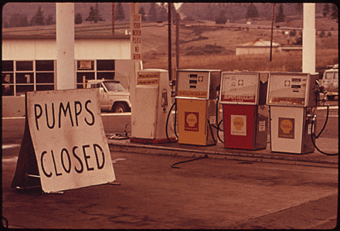
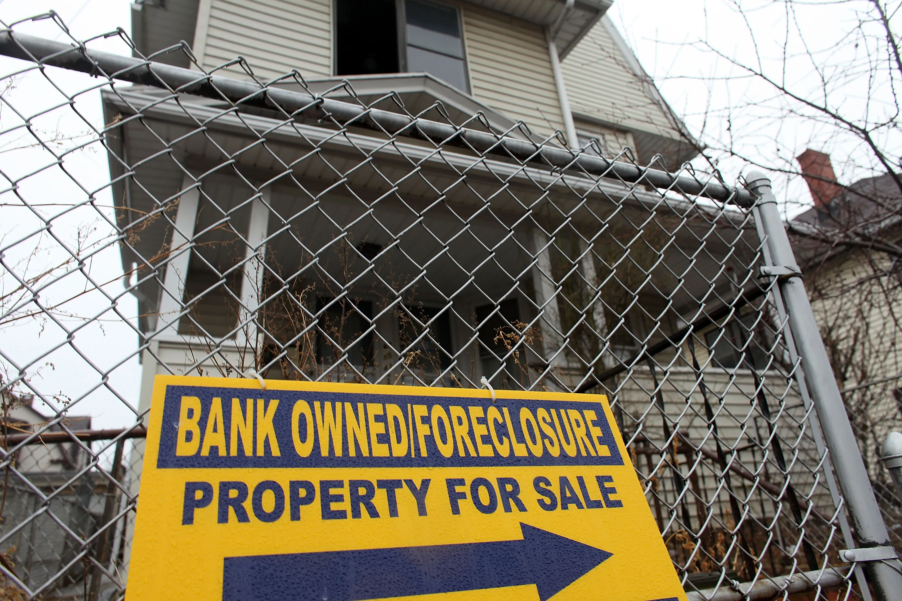

Since 1900, the United States and the United Kingdom have been at the centre of global finance. They have also seen some of its biggest failures. Each crisis shows how greed, weak rules or poor control can hurt millions of people. Each one also led to reforms.
The Wall Street Crash
In the 1920s, many Americans bought shares with borrowed money. Prices went up fast, but they were not based on real company value. In October 1929, panic started and share prices fell sharply. Banks closed, businesses went bankrupt and millions of people lost their jobs. This was the beginning of the Great Depression.
In response, President Roosevelt launched the New Deal. In 1934, the United States created the Securities and Exchange Commission (SEC) to watch the stock market and protect investors.
Oil Shock and Black Monday
In 1973, oil-producing countries cut their exports. The price of oil rose quickly and many economies suffered from high inflation and slow growth.

In October 1987, on a day called Black Monday, the American stock market lost more than 20% of its value in a single day. Computer trading made the fall faster. Markets recovered, but investors learned how fragile confidence can be.
Barings Bank
Barings was one of the oldest banks in Britain. A young trader in Singapore, Nick Leeson, hid his large losses in a secret account. His managers did not check his work carefully. The bank collapsed in 1995 and was sold for one pound. The case is now a classic example of weak internal control.
Enron and WorldCom
Enron, an American energy company, looked very successful. In fact, it used complex financial structures to hide debt and show false profits. Its auditor, Arthur Andersen, did not stop the fraud. When the truth appeared in 2001, Enron went bankrupt. A similar scandal hit WorldCom in 2002.
In response, the US government passed the Sarbanes-Oxley Act (2002), which made company managers and auditors more responsible.
The Global Financial Crisis
Banks gave subprime mortgages to people who could not easily repay them. They then sold these risky loans to investors in complicated products. When house prices fell, the system broke down. In the UK, customers queued outside Northern Rock in 2007 to take out their savings. In September 2008, the American bank Lehman Brothers collapsed, and the crisis became global. Governments used public money to save banks, and many people lost their homes or jobs.

In the same period, Bernard Madoff was arrested for running the largest Ponzi scheme in history. He paid early investors with money from new ones. He was sentenced to 150 years in prison.
Later, in 2012, the LIBOR scandal showed that some banks had manipulated an important interest rate.
Trust Under Pressure
In 2018, the British construction company Carillion collapsed, and many workers and suppliers lost money. People asked why auditors had not given a warning. The same year, Facebook was criticised in the Cambridge Analytica case, where the data of millions of users was used without their clear permission. In 2022, Elizabeth Holmes, founder of the health company Theranos, was found guilty of defrauding investors.
In the UK, the Post Office Horizon scandal also shocked the public. From 1999, a faulty accounting software system showed missing money in local post offices. Hundreds of subpostmasters were wrongly accused and prosecuted. Many convictions were later overturned.
New Shocks
In 2020, the COVID-19 pandemic stopped economic activity in many countries and governments spent huge sums to support companies and workers. In 2022, the cryptocurrency exchange FTX collapsed, and its founder, Sam Bankman-Fried, was later convicted of fraud. In March 2023, Silicon Valley Bank failed after a very fast run on its deposits.
What Do These Events Have in Common?
People wanted fast profits.
Auditors, boards and regulators did not always do their job.
Bad news was hidden for too long.
New laws and institutions usually appear after the damage is done.
Vocabulary
| Word | Meaning |
|---|---|
| crash | a sudden, severe fall in prices |
| bankruptcy | when a company cannot pay its debts |
| fraud | deliberate lie to gain money |
| audit | an independent check of a company's accounts |
| bailout | public money given to save a failing company |
| regulation | official rules to control an activity |